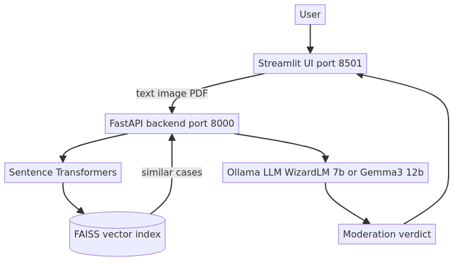
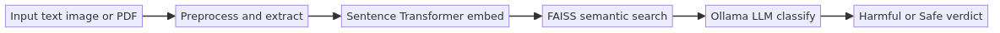
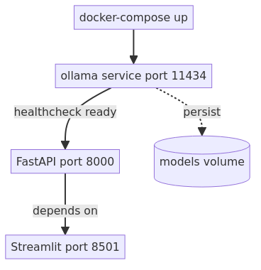
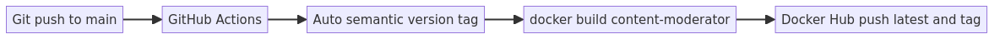
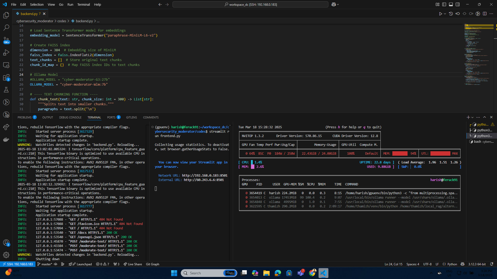
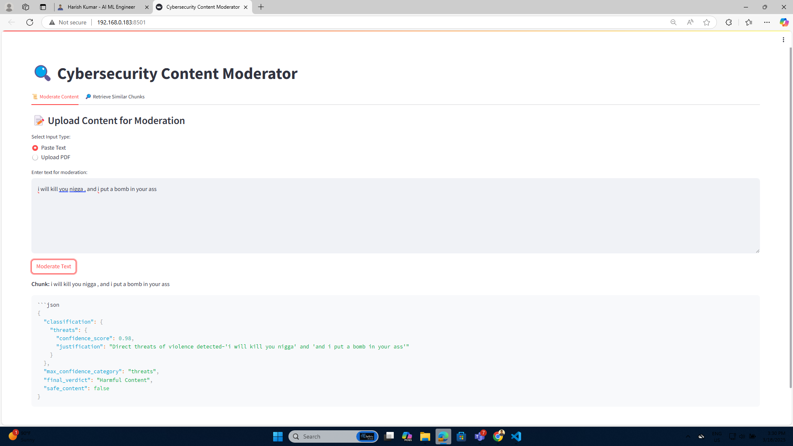
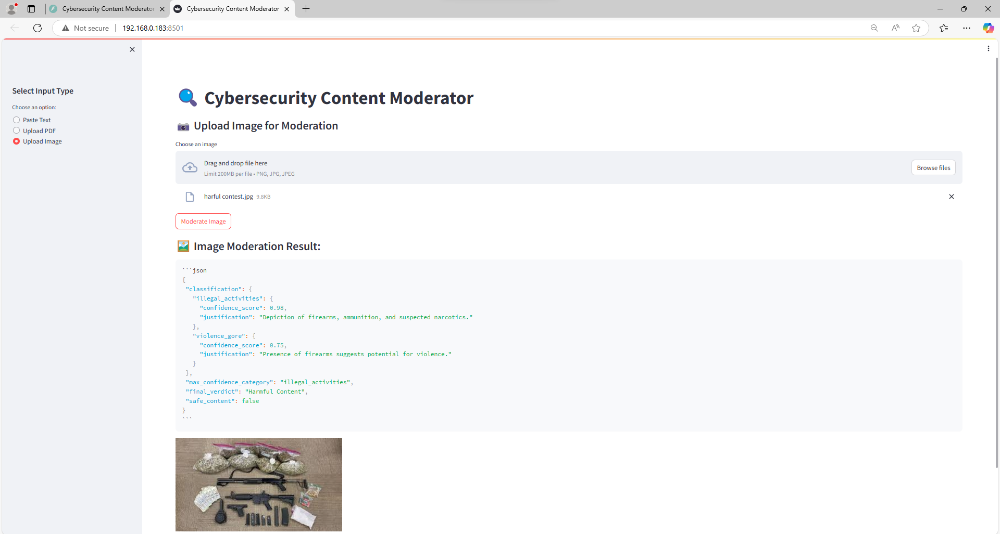
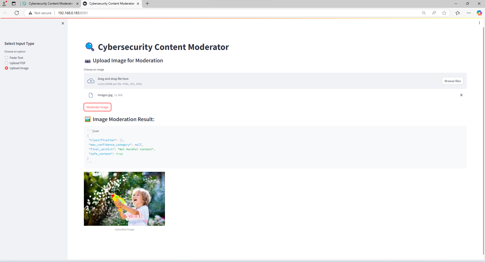
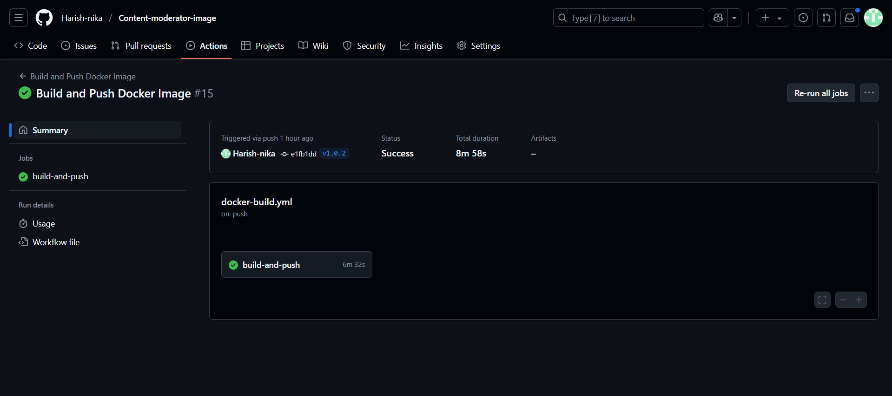
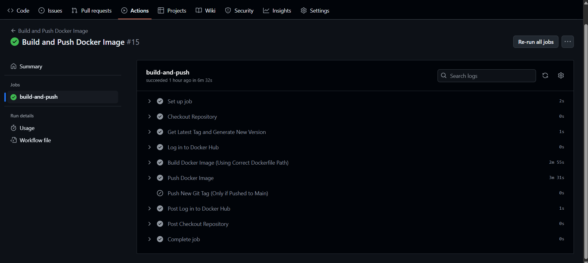

Cybersecurity Content Moderator
LLM-powered harmful content detection — text, image, and PDF
- Ollama LLM (WizardLM 7b / Gemma3 12b)
- FAISS semantic search
- Dockerised deployment
- GitHub Actions CI/CD
AI cybersecurity system to detect hate speech and harmful content in text, images, and PDFs. Custom-trained Ollama model running locally with FAISS semantic retrieval, FastAPI backend, and Streamlit UI — packaged as a Docker image with auto-versioned CI push to Docker Hub.
What it does
A full-stack AI system that analyses user-submitted text, images, and PDF files for hate speech, harmful content, and cybersecurity threats. The backend runs a locally-hosted Ollama LLM (WizardLM 7b or Gemma3 12b) with FAISS-powered semantic search to retrieve similar past cases before generating a verdict.
Features
- Text, Image & PDF Moderation: A single endpoint stack handles all three input types via
POST /upload-text,/upload-image, and/upload-pdf. - AI-Powered Content Analysis: Custom-trained Ollama model (
cyber-moderator-Wlm:7b/cyber-moderator-G3:12b) — WizardLM 7b for text, Gemma3 12b vision for images. - Semantic Search: FAISS index + Sentence Transformers retrieves the most similar prior cases to ground the LLM verdict.
- User-Friendly UI: Streamlit frontend lets users upload files or paste text and see instant moderation results.
- Containerised: Single Docker image, GPU-passthrough supported, available on Docker Hub.
- Auto-versioned CI: GitHub Actions builds and pushes
latest+ semantic version tag on every merge tomain.
API Endpoints
| Endpoint | Method | Description |
|---|---|---|
/upload-text or /upload-image |
POST | Accepts plain text or image for moderation |
/upload-pdf |
POST | Accepts a PDF file — extracts text and analyses |
Project structure
Architecture & system flows
End-to-end view: how a user input flows through Streamlit → FastAPI → Sentence Transformers + FAISS → Ollama LLM → verdict.




Custom Ollama model setup
Two fine-tuned models are created from base weights using Ollama Modelfile:
- cyber-moderator-Wlm:7b — WizardLM 7b fine-tuned for text moderation (temperature 0.7, top_p 0.9)
- cyber-moderator-G3:12b — Gemma3 12b vision model for image-based content classification
Modelfile (WizardLM)
Build & test the model
FAISS semantic retrieval
Before calling the LLM, the backend embeds the input using Sentence Transformers and queries a FAISS index of past moderation examples. The top-k similar cases are injected as context into the LLM prompt, grounding the verdict in prior decisions and reducing hallucinations.
Supported moderation cases (capstone research)
- Hate speech and slurs (text)
- Weapons and drug imagery (images — WizardLM vision / Gemma3 12b)
- Threat and harassment detection (text)
- Harmful PDF content extraction and analysis
- Toy / non-threatening object disambiguation (e.g., child with toy gun)
Backend processing output

FastAPI backend live — uvicorn on port 8000
Streamlit UI — text moderation

Streamlit text moderation interface

LLM verdict — harmful content flagged
Vision model — image moderation

Real weapons & drugs — flagged harmful

Child with toy gun — correctly classified safe
GitHub Actions CI build

GitHub Actions — build and versioning steps

Docker push — latest + semantic version tag
Quick start — Docker Hub image
Docker Compose (full stack)
How Compose orchestrates services
- ollama —
ollama/ollamaimage, healthcheck onollama list, persists models via volume. - backend — depends on ollama healthy; pulls base models, creates custom Modelfiles, starts uvicorn.
- frontend — depends on backend; runs
streamlit run frontend.pyon port 8501.
GitHub Actions CI/CD
On every push to main: auto-calculates the next semantic version from git tags,
builds the Docker image, pushes latest + version tag to Docker Hub,
and creates a new git tag on the repository.
Prerequisites to run
- Docker or Podman installed
- NVIDIA GPU + NVIDIA drivers + CUDA (for full performance)
- Access to Docker Hub image
harishkumarthesde/content-moderator:latest